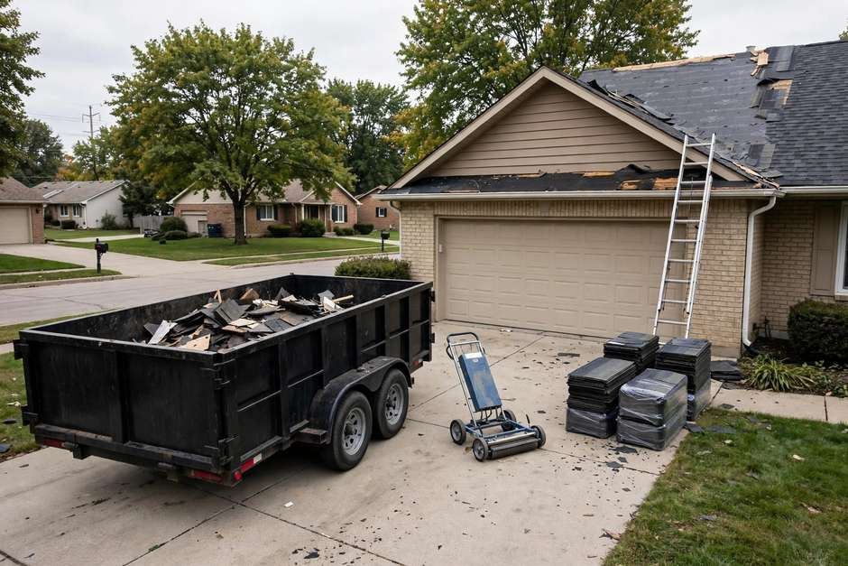
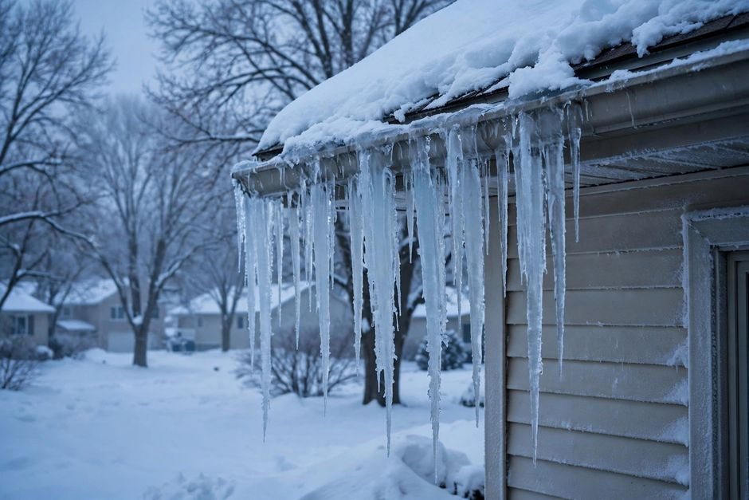
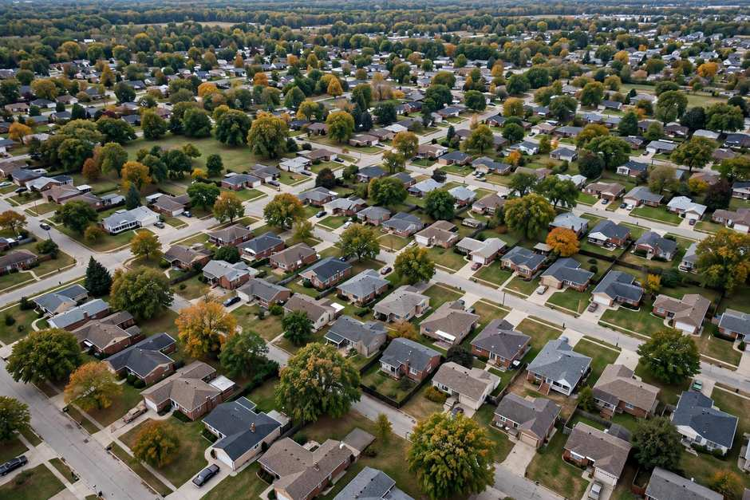

Lake Park — 75 Acres
The Park District’s figure for the park, purchased in 1959 and completed as a full property in 2021. The housing wraps the park; the park is the anchor, not a boundary.
Lake Opeka is a lake- and park-anchored residential area in southwest-central Des Plaines, where the housing wraps Lake Park and its golf course and marina. The era-typical expectation for the single-family streets is brick-ranch and split- and tri-level patterns — expectations only, checked per house — with apartments and condos at the edges. WP Exterior Inc serves addresses inside the Des Plaines city limits; call (224) 802-4866 during office hours.
Describe what you are seeing on the roof. Calls are answered during the office hours listed below.
Call (224) 802-4866 → Phone is the only contact channel. No email or online form.Lake Opeka work starts from the era-typical patterns and the park setting: pitched ranch and split-level roofs, tree debris from park and golf-course trees, and association rules at the apartment and condo edges. Related reading: preparing a roof for winter in Des Plaines and metal roofing compared with shingle roofing for Des Plaines. See the full list on the services page.

Roof ReplacementOn a brick ranch, replacement means low-to-moderate pitch hips and gables; on a split- or tri-level, staggered gables with mid-level valleys. Both are era-typical expectations for the single-family streets, confirmed per house on inspection.View details → Roof RepairRepair topics on this stock include flashing at chimneys and walls, pipe boots, valleys, and damaged sections. Park and golf-course trees add a general debris and limb exposure, checked per house rather than assumed.View details →
Roof RepairRepair topics on this stock include flashing at chimneys and walls, pipe boots, valleys, and damaged sections. Park and golf-course trees add a general debris and limb exposure, checked per house rather than assumed.View details → Roof InspectionAn inspection records the surface, flashing, valleys, penetrations, and accessible attic conditions, with photographs and written findings. At the apartment and condo edges, who decides about the roof is confirmed before any scope is discussed.View details →
Roof InspectionAn inspection records the surface, flashing, valleys, penetrations, and accessible attic conditions, with photographs and written findings. At the apartment and condo edges, who decides about the roof is confirmed before any scope is discussed.View details → Emergency Roof RepairEmergency roof repair addresses active leaks and storm breaches. Call during office hours, describe what is happening, and the next step is arranged from there.View details →
Emergency Roof RepairEmergency roof repair addresses active leaks and storm breaches. Call during office hours, describe what is happening, and the next step is arranged from there.View details → Storm Damage Roof RepairStorm damage is recorded with dated photographs and written findings for the homeowner’s own records. No lake-effect wind claim is made: no wind-exposure measurement for Lake Opeka was verified.View details →
Storm Damage Roof RepairStorm damage is recorded with dated photographs and written findings for the homeowner’s own records. No lake-effect wind claim is made: no wind-exposure measurement for Lake Opeka was verified.View details → Metal RoofingMetal roofing is described on its own service page as a premium, long-life alternative with a longer decision cycle. Whether it suits an individual Lake Opeka house is a per-house question, discussed after inspection.View details →
Metal RoofingMetal roofing is described on its own service page as a premium, long-life alternative with a longer decision cycle. Whether it suits an individual Lake Opeka house is a per-house question, discussed after inspection.View details → Gutter InstallationGutters, downspouts, fascia, and soffit form the drainage edge of the roof. Near a park and golf course, debris collection is a general exposure, and gutter and fascia condition are assessed together.View details →
Gutter InstallationGutters, downspouts, fascia, and soffit form the drainage edge of the roof. Near a park and golf course, debris collection is a general exposure, and gutter and fascia condition are assessed together.View details →
Roof Ventilation InstallationVentilation is part of the roof assembly: intake at the soffit, exhaust at the ridge. On ranch and split-level houses, blocked soffit vents and mixed vent types are recurring inspection topics, checked per house.View details →The lake and the park set the scene; the individual house sets the scope. Expectations stay era-typical, and the edges follow the association rule.
Listing copy repeatedly shows brick ranches, split-levels, and tri-levels near the lake — individual-listing evidence, a pattern, not a survey. Low and moderate-pitch hips and gables, and staggered gables on split- and tri-levels, are the expectations.
How we help: Inspection confirms what the individual house actually has, and records the surface, flashing, valleys, and attic conditions with photographs and written findings.
Park, golf-course, and mature residential street trees mean debris and limb exposure as a general matter. No canopy figure is verified for the area, and none is claimed.
How we help: Valleys, gutters, and the roof surface are checked for debris collection and limb contact, per house, as part of inspection.
Apartments and condos stand at the edges of the area. In a condo building the roof is normally a common element, so the association decides; no specific Lake Opeka complex or homeowners association was verified, and none is named.
How we help: Who decides is confirmed per building before any scope is discussed, so the conversation starts with the right party.
Stains on ceilings or walls after rain or thaw
Shingle granules collecting in gutters or at downspouts
Curling, cracking, or missing shingles
Debris collecting in valleys or behind chimneys
Ice dams forming at eaves or in valleys in winter
The anchors below come from the Park District and the streets that frame the park. No City boundary for a Lake Opeka neighbourhood was read, and no polygon is drawn.
The Park District’s figure for the park, purchased in 1959 and completed as a full property in 2021. The housing wraps the park; the park is the anchor, not a boundary.
At 1015 Howard Avenue, the golf course and marina anchor the park’s active side. Park and golf-course trees are part of the area’s general debris exposure.
At 1177 Howard Avenue, the Lakeview Center anchors the park’s community side, with the North Lake Park area at Lee Street and Howard Avenue nearby.
The streets that frame the park and the area around it. The park address is also given as 2200 Lee Street in directories — multiple entrances, not a conflict of location.
WP Exterior Inc serves addresses inside the Des Plaines city limits. A Des Plaines mailing address does not by itself prove an address is inside the city: a large unincorporated area east of I-294 carries Des Plaines mailing addresses but has never been part of the city, and permit jurisdiction follows the city limits. If an address sits near an edge or on a border road, its jurisdiction is checked per address before any permit or service claim is made. Lake Opeka addresses sit inside the city limits around Lake Park in the southwest-central city; jurisdiction is checked per address, and no river-flood language is imported here — flood-map checks still apply per address citywide.
Call with the full street address. City maps and county parcel records settle whether an address is inside Des Plaines, and the FEMA Flood Insurance Rate Map is checked per address where floodplain questions arise. No list of ZIP codes is used as a coverage boundary.
“I use WP Exteriors to repaint my roof and do as some tuckpointing on the exterior of my building. Pat and his team were very professional and communicative. They did a good job explaining what needs to be done to my home immediately and what I can plan for in the future. I will definitely be using them in the future.”
Patricia Murray2 months ago
Google review“I recently had the pleasure of working with WP Exterior for my roofing needs, and I must say, I couldn't be more satisfied with the outcome. From the moment I contacted them, it was evident that they truly value their customers. …”
Filip Libera2 years ago · Verbatim excerpt
Google review“Patryk was great to work with and extremely professional. I highly recommend WP exteriors and plan on using them again in the future!”
Brian Avila Gaona5 months ago · Roof inspection
Google reviewCall during office hours if your question is not answered here.
Call (224) 802-4866 →This page does not state a lake acreage: sources conflict, giving 28 acres and 40 acres of water. The Park District's 75-acre figure is for Lake Park, the park property, and is the only acreage stated here.
Most are not. Most homes here are lake-area, not lakefront, and lakefront status is per lot. This page describes the area as lake- and park-anchored and claims lakefront status for no home.
No such claim is made here. Lake-side wind exposure is sometimes asserted in marketing copy, but no wind-exposure measurement for Lake Opeka was verified, so no lake-effect wind damage is claimed as a local fact.
No floodplain claim for Lake Opeka is verified in the sources read, and the area is not in the City plan's river and creek floodplain discussion. River-flood language is not imported here, and a per-address flood-map check still applies citywide.
In a condo building the roof is normally a common element, so the association decides. No specific Lake Opeka complex or homeowners association was verified and none is named; who decides is confirmed per building.

Call WP Exterior Inc during office hours and describe the house and what you are seeing. Era-typical patterns are a starting point; the individual house decides the scope.
Call (224) 802-4866 during office hours. Tell us the street address near Lake Park and what you are seeing.